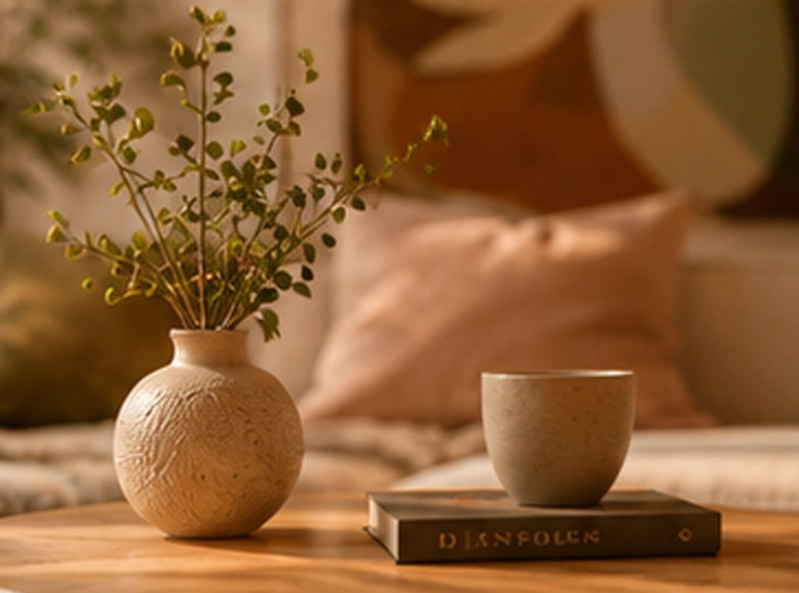
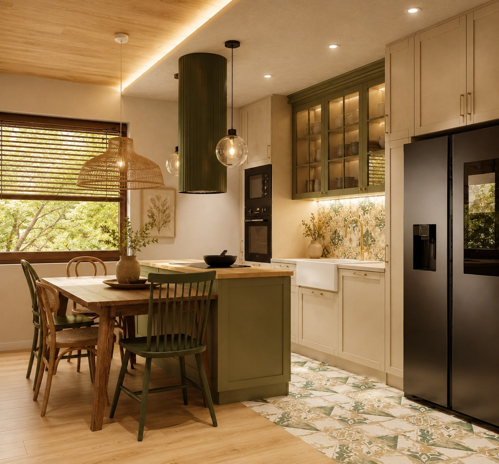
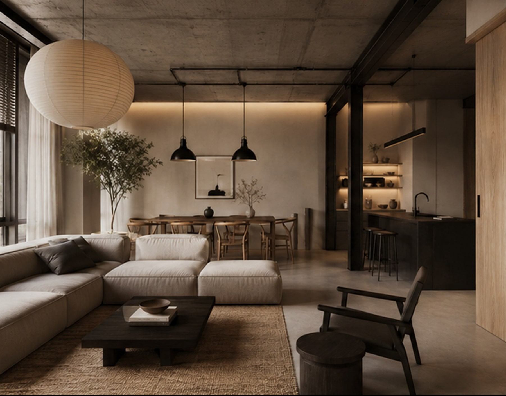
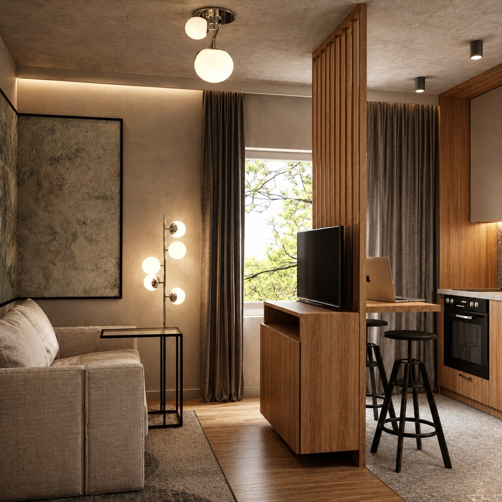
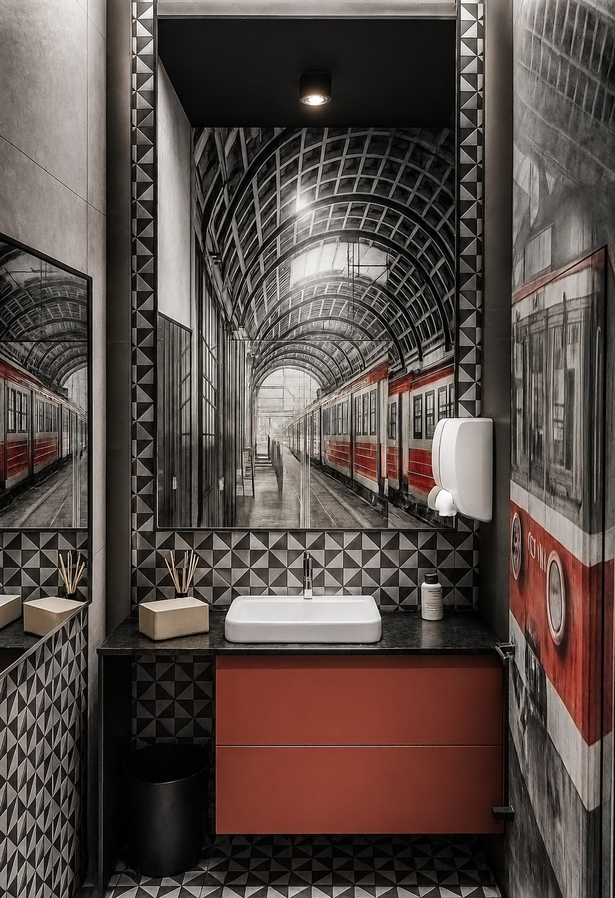
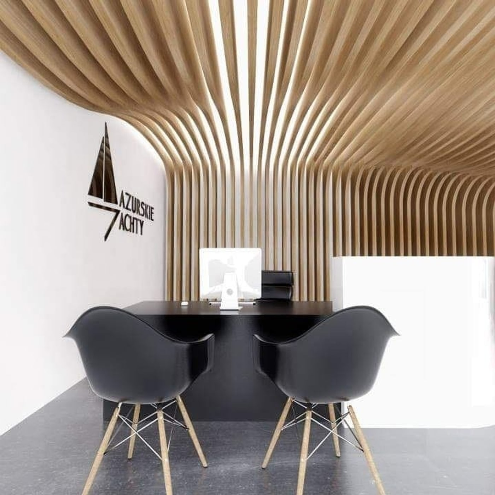

chcesz mieć wnętrze dopasowane do Twojego stylu życia, a nie gotowych schematów
Projektuję przestrzenie, które mają emocje.
Tworzę wnętrza z charakterem, które nie są kopią trendów, lecz odzwierciedleniem osobowości i stylu życia ich właścicieli.
Każdy projekt traktuję jak kompozycję. Funkcja, proporcja i materiał tworzą spójne doświadczenie przestrzeni.
Scroll
Dla kogo
Ta współpraca jest dla Ciebie, jeśli:
czujesz, że inspiracje to za mało i potrzebujesz spójnej koncepcji
nie masz czasu lub nie chcesz przechodzić przez cały proces samodzielnie
zależy Ci na efekcie, który będzie przemyślany i dopracowany
Ta współpraca nie jest dla osób, które szukają szybkich, przypadkowych decyzji.
Proces / jak pracuję
Każdy projekt to proces, który prowadzi do spójnej przestrzeni.

Zrozumienie stylu życia
Zaczynam od poznania Twoich potrzeb, nawyków i sposobu życia. Na tej podstawie powstaje układ funkcjonalny.
Koncepcja wizualna
Łączę materiały, światło i proporcje w spójną całość.
Dokumentacja techniczna
Przygotowuję szczegółowe rysunki dla wykonawców.
Lista materiałów
Otrzymujesz konkretne decyzje - nie musisz zgadywać.
Każdy etap ma swoje uzasadnienie i prowadzi do jednego celu - przestrzeni, która działa na co dzień.
Oferta
Trzy poziomy współpracy - wybierz, ile chcesz oddać.
Pakiet 01
Projekt wnętrza
Kompleksowy projekt dopasowany do Twojego stylu życia.
- układ funkcjonalny
- wizualizacje
- dokumentacja techniczna
- lista materiałów
Pakiet 02
Projekt + konsultacje
Projekt + wsparcie podczas realizacji.
- konsultacje na etapie realizacji
- pomoc w decyzjach
- wsparcie przy zakupach
Pakiet 03
Projekt + nadzór autorski
Pełne przejęcie procesu.
- pełen projekt wnętrza
- koordynacja wykonawców
- nadzór nad realizacją
- wsparcie zakupowe
PWR Moment
Każdy projekt zawiera element, który buduje jego charakter.
To nie jest przypadkowy detal. To świadomie zaprojektowany moment - punkt, który przyciąga uwagę i nadaje przestrzeni tożsamość.
kompozycja ściany
materiał
światło
układ przestrzeni
To właśnie ten moment sprawia, że wnętrze zostaje zapamiętane.
Realizacje
Każdy projekt zaczyna się od potrzeby.
Jedni klienci szukają spokoju. Inni charakteru. Jeszcze inni funkcjonalności. Moim zadaniem jest przełożyć to na przestrzeń, która działa na co dzień.
Zobacz wybrane realizacje i historie ich powstawania
Wołomin / salon
Mocny kolor jako punkt pamięci.
Potrzeba klienta: reprezentacyjna strefa dzienna, która nie będzie neutralnym tłem.
Problem: otwarta przestrzeń wymagała wyrazistego centrum i porządku kompozycyjnego.
Decyzje projektowe: zielona sofa, rysunek schodów i okrągłe światło tworzą jeden charakterystyczny gest.
Efekt: wnętrze jest eleganckie, ale zapamiętywalne.

Sulejówek / kuchnia
Ciepło domu, rytm materiałów.
Potrzeba klienta: rodzinna kuchnia połączona ze strefą spotkań.
Problem: wiele faktur łatwo mogło stworzyć wizualny chaos.
Decyzje projektowe: zieleń zabudowy, drewno, cegła i światło zostały spięte w jedną paletę.
Efekt: przestrzeń jest przytulna, funkcjonalna i ma własny charakter.

Industrial japandi / salon
Miękkość kontra surowy detal.
Potrzeba klienta: spokojna baza z bardziej miejskim, wyrazistym akcentem.
Problem: industrialne elementy mogły zdominować wnętrze.
Decyzje projektowe: beton, drewno i ciemna kuchnia zostały zbalansowane miękką sofą oraz ciepłym światłem.
Efekt: wnętrze jest nastrojowe, ale nadal codzienne i wygodne.

Kawalerka / kompakt
Mały metraż, pełna funkcja.
Potrzeba klienta: mieszkanie, które ma działać jak kilka stref w jednym pokoju.
Problem: każdy centymetr musiał mieć uzasadnienie.
Decyzje projektowe: zabudowa, lustro, światło i materiały porządkują funkcje bez dzielenia przestrzeni.
Efekt: kawalerka jest kompaktowa, ale nie sprawia wrażenia ciasnej.

Toaleta / Stacja Glinianki
Małe wnętrze z mocną historią.
Potrzeba klienta: toaleta, która nie będzie tylko technicznym pomieszczeniem.
Problem: niewielka powierzchnia nie zostawiała miejsca na dekoracje.
Decyzje projektowe: mural, grafit i czerwony akcent tworzą jeden wyraźny PWR Moment.
Efekt: wnętrze zapada w pamięć mimo małej skali.

Biuro / sprzedaż jachtów
Funkcja sprzedaży w dopracowanej oprawie.
Potrzeba klienta: miejsce rozmów z klientem, które od razu komunikuje jakość usługi.
Problem: biuro musiało łączyć reprezentacyjność z wygodą pracy.
Decyzje projektowe: łukowa ściana lamelowa, światło i miękkie formy budują skojarzenie z premium.
Efekt: przestrzeń wspiera rozmowę, zaufanie i decyzję zakupową.
Opinie
Zaufanie buduje się w trakcie współpracy.
Projekt to proces. Dlatego najważniejsze są doświadczenia osób, które już przez niego przeszły.
„opinia”
„opinia”
„opinia”
O mnie
Nie projektuję wnętrz dla wszystkich.
Projektowanie to dla mnie coś więcej niż estetyka. To sposób myślenia o przestrzeni i o tym, jak wpływa ona na codzienne życie.
Każdy projekt traktuję indywidualnie szukając rozwiązań dopasowanych do konkretnej osoby.
Nie tworzę wnętrz „ładnych”. Tworzę wnętrza, które mają sens.
PPrzestrzeń
WWrażenie
RRytm
Kontakt
Jeśli czujesz, że to podejście jest Ci bliskie - porozmawiajmy.
Adres
ul. Sobieskiego 74
05-070 Sulejówek
Telefon